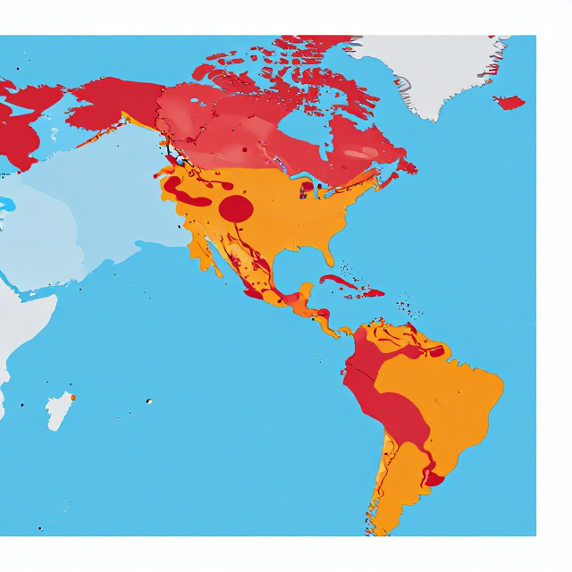

那一天，天氣讓我們停擺
氣候變遷 × 極端天氣 × 我們的經濟
5.3-III｜國小 9–12 歲
起點
你還記得那一天嗎？
停電
冰箱裡的食物怎麼辦？
停課
爸媽還是要去上班嗎？
淹水
路上走得出去嗎？
這些「停擺」，不只是天氣的事——
它們是氣候變遷對每個家庭的帳單。
活動一
那一天，天氣讓我們停擺
從個人記憶出發，感受極端天氣的真實代價
活動一・步驟 1–2
你的颱風記憶是什麼？
拿出便利貼，寫下你經歷過的一次颱風、豪雨或高溫事件。
我的記憶
- 是哪一次颱風或豪雨？
- 家裡受到什麼影響？
- 當時什麼感覺？
家人的記憶
- 阿公阿嬤最難忘的颱風？
- 爸媽那天怎麼辦？
- 和你的記憶一樣嗎？
活動一・步驟 3
莫拉克颱風 2009：一整年的雨，三天下完
阿里山三天雨量
2,884
毫米 ≈ 整整一年份
死亡人數
681
人
公共設施與農業損失
1,947
億元新台幣
1,947 億元——用這筆錢可以蓋幾間學校？
資料來源：臺灣氣候變遷推估資訊平台（TCCIP）
活動二
災害帳單怎麼算
從台灣到全球，看懂極端天氣的真實成本
活動二・步驟 2
凱米颱風 2024：你可能正好經歷過
全台停電
50 萬
戶
死亡人數
10
人
農業損失
47
億元新台幣
高雄、屏東多條鐵公路中斷數日——這不只是「天氣」，是公共服務被打斷的樣子。
資料來源：中央災害應變中心（EMIC）
活動二・步驟 4
一場颱風的骨牌效應
颱風登陸
→
市區淹水
→
公車停駛
→
爸媽不能上班
停電
→
冰箱停擺
→
便利商店沒貨
→
菜價大漲
道路中斷
→
農產品無法運出
→
農民損失慘重
→
農損 47 億元
小組用圖卡連連看，補出你組選的那條骨牌鏈。
活動二・步驟 3
全球的災害帳單：數字大到很難想像
美國 2024 年
27 件
十億美元以上災害
1,827 億美元
≈ 新台幣 5.8 兆元
全球 2000–2019 年
7,348 起
重大災害
2.97 兆美元
是前 20 年的近兩倍
活動三
誰最受傷？氣候正義初探
認識最脆弱的族群，培養同理行動力
活動三・步驟 2
熱浪：看不見的殺手
全球熱浪死亡（每年）
48.9 萬
人
亞洲佔比
45%
65 歲以上死亡率 20 年增幅
85%
阿公阿嬤是高風險族群。熱浪不是「很熱而已」——它每年奪走比颱風更多的生命。
資料來源：世界衛生組織（WHO）氣候變遷與高溫健康
活動三・步驟 3
全球一半人口住在高度脆弱區
全球高度脆弱區分布地圖
資料來源：IPCC AR6 WG2 2022

33–36 億人（接近全球一半人口）居住在氣候變遷高度脆弱地區
這不是「別人家的事」——台灣也是其中一員。
資料來源：IPCC AR6 第二工作組摘要
活動四
小小研究員 × 在地行動提案
深入研究一個案例，提出一項真實行動
活動四・步驟 2・學習單（投影版）
氣候災害研究表
選一個案例（莫拉克 2009 / 凱米 2024 / 2023 南部豪雨），填入各欄。
| 項目 | 我的研究紀錄 |
|---|---|
| 事件名稱 | |
| 時間 / 地點 | |
| 規模（雨量/風速） | |
| 死亡與損失 | |
| 公共服務受影響 | |
| 復原花多久 | |
| 我們的行動提案 |
總結
三個關鍵字，一起記住
第 1 個
帳單
極端天氣讓每個家庭、每個國家付出龐大代價
第 2 個
骨牌
一場災害引發連鎖影響：設施→服務→生計
第 3 個
行動
了解誰最脆弱，從關懷前線工作者開始
氣候變遷不只是天氣——是每個家庭共同承擔的事。